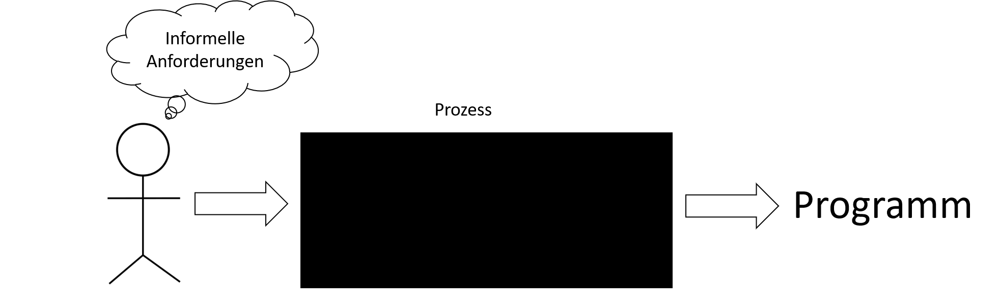
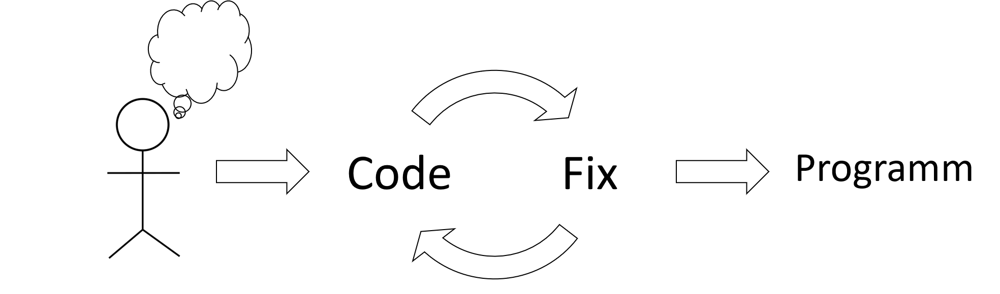

Softwareprozesse
Marcel Lüthi Departement Mathematik und Informatik
Aktivitäten in der Softwareentwicklung

Software Prozessmodelle
- Versuch, den Lebenszyklus zu organisieren.
- Aktivitäten definieren
- Ordnung und Beziehung der Aktivitäten festlegen
- Kriterien festlegen wann man zur nächsten Aktivität übergehen kann.
Beantwortet folgende Fragen:
- Was sollen wir als nächstes tun?
- Wie lange sollen wir das tun?
Ziele von Software Prozessmodellen
- Standardisierung
- Vorhersagbarkeit
- Produktivität
- Hohe Produktqualität
- Planung von Zeit und Budget
Softwareprozess: Blackbox Sicht
- Interaktion mit Benutzer nur am Anfang und Ende
- Nicht geeignet für Software.
- Viele Qualitätseigenschaften können nicht direkt von Endprodukt abgeleitet werden.
- Fehler in Anforderungen können erst am Ende entddeckt werden.
Softwareprozess: Whitebox Sicht

- Interaktion mit Benutzer in jeder Phase vom Projekt
- Eingehen auf Veränderungen möglich
Erster Ansatz: Code and fix model
- Probleme:
- Unmöglich Vorhersagen zu treffen
- Unmöglich zu managen
- Führte zur Softwarekrise
- Kein Softwareprozess
Schrittweiser Ansatz: Wasserfall Modell

- Stark strukturierter Prozess
- Dokumentlastig (Dokument nach jeder Phase)
- Prozess strukturiert und planbar
- Implementation erst wenn Anforderungen verstanden sind
Wasserfall Modell: Probleme
- Änderung in Anforderungen nicht berücksichtigt
- Kein Feedback zwischen den Phasen
- Keine Parallelisierung
- Fixes Einführungsdatum für ganzes System
Royce, Winston W. "Managing the development of large software systems: concepts and techniques." 1970
- Probleme wurden bereits im Orignal Paper beschrieben.
- Wasserfall war nie als Lösung gedacht.
Wasserfall Modell mit Feedback

- Feedback an vorherige Stufe oft nicht ausreichend.
V-Modell

- Wasserfallmodell mit Feedback über mehrere Stufen
Wasserfall Modell mit Prototyping

- (Throw-away) Prototyp wird erstellt um Anforderungen und Design zu verstehen/verifizieren
Wachstumsmodelle (Evolutionary models)
- Grundidee: Gliederung der Software in kleine, aufeinander aufbauende, betriebsfähige Releases
- System wird nicht konstruiert sondern wächst.
- Extremfall: Kontinuierliche Integration
Disziplin und gute Planung werden verlangt, damit es nicht zu Code and Fix Modell verkommt.
Iteratives vs. Inkrementelles Modell
 Iteratives Modell
Iteratives Modell
 Inkrementelles Modell
Inkrementelles Modell
Spiralmodell
- Kombiniert Entwicklungsaktivitäten mit Risiko Management
- Hauptaktivitäten die iterativ ausgeführt werden:
- Festlegung von Zielen / Alternativen. Beschreibung von Rahmenbedingungen
- Evaluierung der Alternativen. Erkennen / Abschätzen von Risiken
- Realisierung und Überprüfung des Zwischenprodukts
- Planung des nächsten Zyklus
Spiralmodell

- Prototypen/Simulationen werden implementiert um Risiken abschätzen zu können.
Unit Tests
- Wozu braucht es Software Prozesse?
- Weshalb ist ein Black Box Prozess speziell für die Softwareproduktion ungeeignet?
- Was sind die Hauptprobleme des Wasserfallmodells
- Wie lassen sich diese lösen?
- Wie wird beim Spiralmodell das Risiko minimiert?